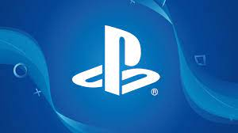
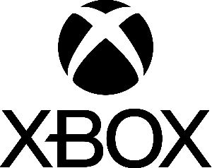
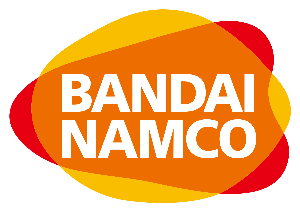

Nintendo

La gran titan, de los titanes, nacida en 1889,
ha sido inovadora con muchas cosas, como videojuegos
y sus consolas, con su mascota Super Mario, ha hecho
muchas cosas a los videojuegos, incluso salvandolos
de su muerte entre el '83 y el '85.
Playstation

La compañia que nacio gracias a las malas acciones
de nintendo con sony, naciendo de esta buenas sagas como crash
bandicoot, resident evil, God of war, entre otras.
Xbox

El intento que salio bien de microsoft en adentrarse
a los videojuegos, con tres consolas en las ultimas eras
de las consolas, y con sagas como la de halo, minecraft,
Gears of war, y otras sagas mas.
SEGA
Sega, la vieja rival de nintendo en los noventas,
con su mascota, el erizo mas rapido sonic, logro intentar quedarse
con sus consolas como la genesis, la saturn, la dreamcast, entre
otros.
konami

Otra clasica de los videojuegos, con sus juegos como la
saga de Contra, Silent hill, Metal Gear Solid, Pes, entre otras,
tambien esta es creadora del codigo konami, el cual es todo un
clasico.
Square Enix
La compañia la cual eran dos, squaresoft y enix, uniendose
en el año de 2003, con los clasicos rpgs como la saga de Final
Fantasy, Chrono Trigger, o Dragon Quest, tambien
con otros proyectos como la saga de Life is Strange, el juego
de los vengadores, la saga de Tomb Raider de 2013, entre otros.
Atari

De las primeras compañias de videojuegos, con videojuegos
que actualmente se ven pobres o feos, pero que en su epoca
era una inovacion, algo nuevo, con su juego mas conocido
pong, y ports de otros videojuegos, como donkey kong o pac man
a sus consolas, atari a logrado quedarse en el corazón de mucha gente.
BANDAI NAMCO

Otra compañia que eran antes dos, bandai y namco, con juegos clasicos
de arcades como pac man, galaga, galaxian, y recientemente con
la saga de Dragon Ball Z: Budokai Tenkaichi, la saga de tekken, la saga de
naruto Shippuden, y otros juegos o sagas mas.